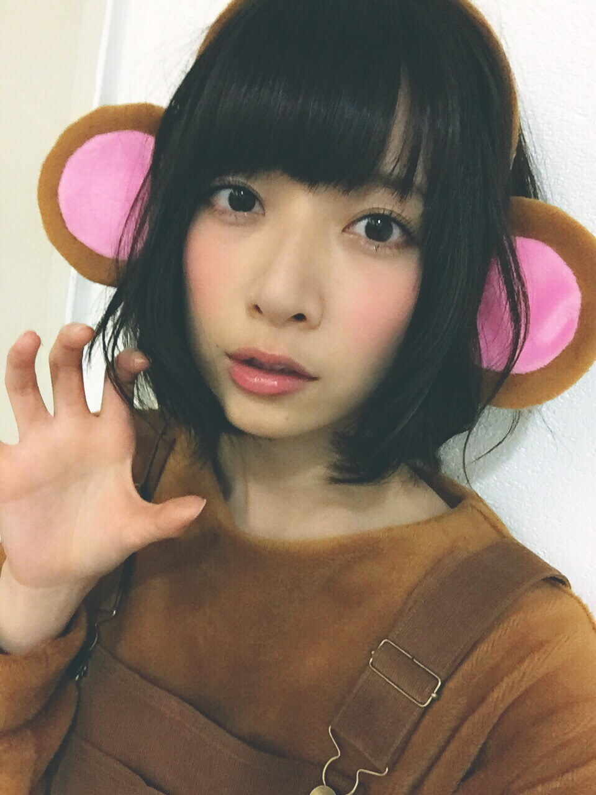

| 2016/02 19 Fri | 46時間TVはみるの？？ |
46時間TV！
明日、20日午前4時から生放送始まります！
誕生日迎えたらすぐメイク開始してお仕事よ！
わたしは午前4時5分に生まれたので、みなさんにわたしが23歳になる瞬間を拝見して頂く形になるのではなかろうかと...！
46時間TV？なんぞや！？
って方は、公式HPを見てみて！
46時間生配信するの٩(๑`^´๑)۶
ざっくりとしたタイムテーブルもでたね( ･⊝･ )
わたしが出るのが確定しているのは
オープニング、ボーリング、乃木坂電視台、占い企画、人狼、
クイズ王対決、ライブ、乃木のの、
CanCamとのコラボ、SCHOOL OF LOCK!とのコラボ、、、あとはエンディングらへんかな、、、？
見落としてたらごめん！笑
わたし人狼やったことない！初挑戦！
ルールも今から勉強しなきゃ！( ﾟДﾟ )
CanCamのコラボでは
わたしとさゆりんとみさとれいかが登場しますよ！
今月２３日発売のCanCamは、付録に
乃木ザサイズブック というものが付くのだ！！
今回のコラボではその乃木ザサイズを実践するよ！
筋トレをしているわたしたちを見せつけるコーナーになっております...！笑
こんなかんじに...！

楽しく撮影した乃木ザサイズブックの予習にも最適！
おたのしみに！！！٩(๑`^´๑)۶
そしてそして！SCHOOL OF LOCK!とのコラボでは...
ゲストになんと！
とーやま校長とあしざわ教頭をお迎えして！
逆電握手会を開催しますっ！！٩(๑`^´๑)۶
普段交わることのない校長教頭と、ガールズのわたし...！
SOL生徒からしたら、校長教頭が喋っているところを映像付きで見れることってなかなかないよね！！
しかも生で逆電しちゃう！！きゃーーー！！！
逆電してくれてもいいよ！参加してやるぜ！
って生徒の諸君はガールズ掲示板に書き込み待ってるぜ！！！
個人的注目ポイントは
とーやま校長は本当に乃木坂を応援してくれていて、物凄く乃木坂に詳しいのです。いわゆる、乃木オタ なのです。
なので、毎月わたしの出る第3週のSOLではものすごいハジけてくださってまして、乃木坂の曲もこれでもかというくらいわたしの出ていないコーナーや時間でも流してくれているのです、ありがたい...！！
そんなとーやま校長がどんな姿を見せてくれるのか、
そしてあしざわ教頭がそこをどうのらりくらりかわすのか、教頭はいつになったら乃木坂のライブを観に来てくれるのか...
そんなところが見どころかな、と思います。笑
こんな風に解説みたいなことしてるけど、
正直バタバタで全然流れ理解してないぜ！！！笑

ほっぺのにく！！！
とりあえず メンバーもファンのみんなもあんまり寝れないってことだけは分かる！！！笑
インフルも流行ってるみたいだから、
タイムテーブルと相談しつつ、きちんと計画的に睡眠と食事をとりながら楽しもうね！！
そんなこんなで、今日は22歳最後の１日でした
朝から撮影して、
夕方はまいまいと焼き牡蠣とパスタ食べました！
めっちゃボリューミーだった！！お腹いっぱい！！
22歳最後の晩餐はとてもいいものでした٩(๑`^´๑)۶

では、少し早いけど明日らに備えて寝ます！
22歳のわたしを見てくれてありがとうございましたー！！！
23歳になってもよろしくね(*^◯^*)
コメント(1703)
2016/02/19 18:54